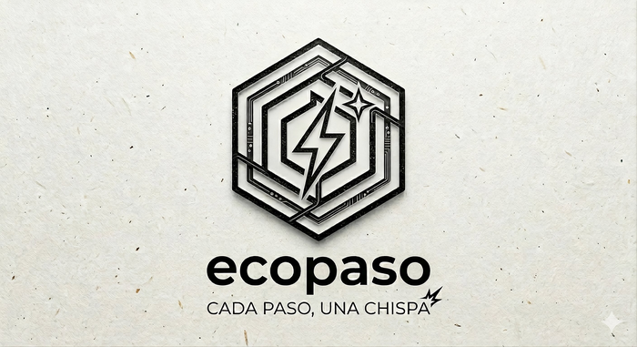
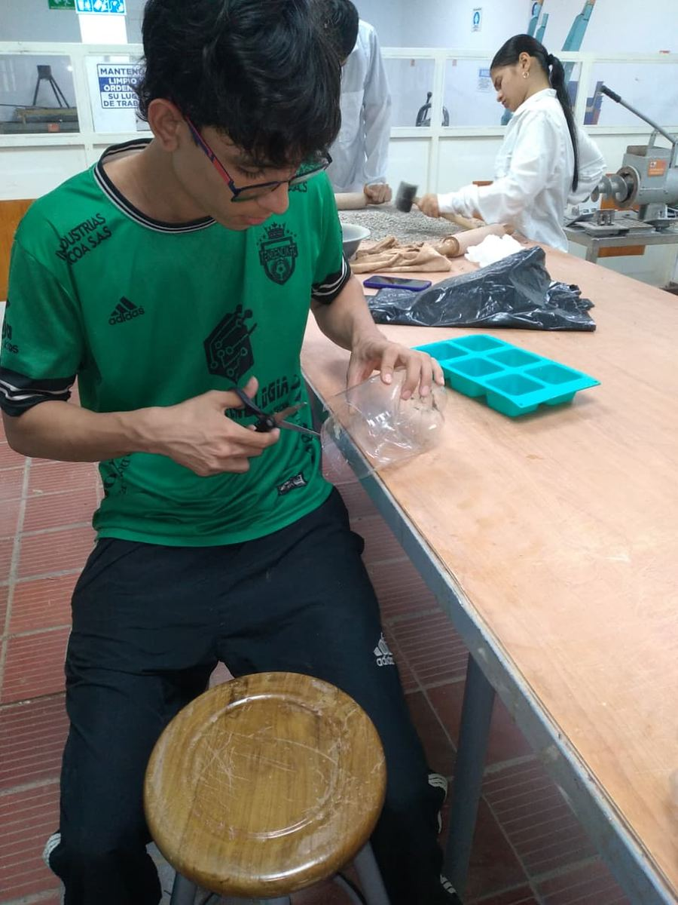
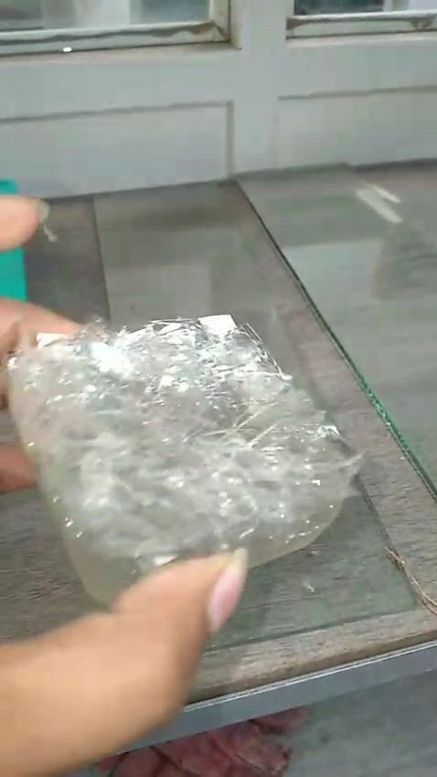
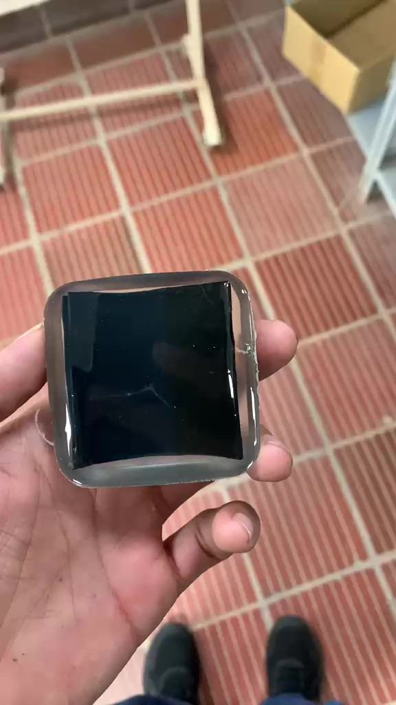
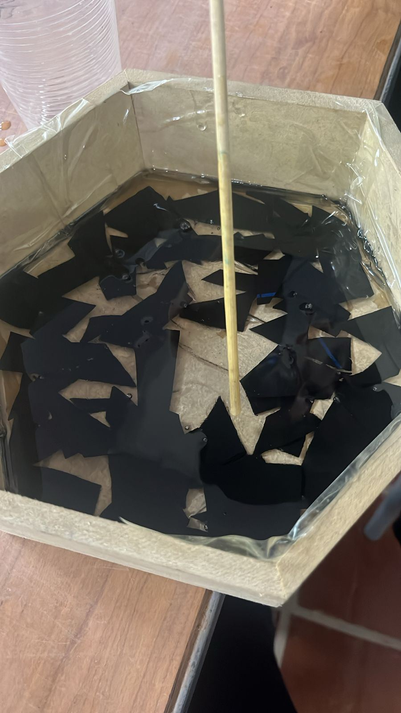
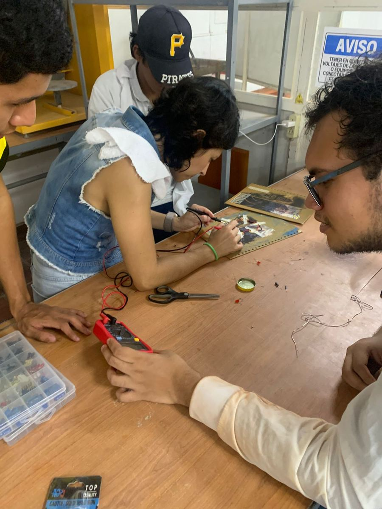
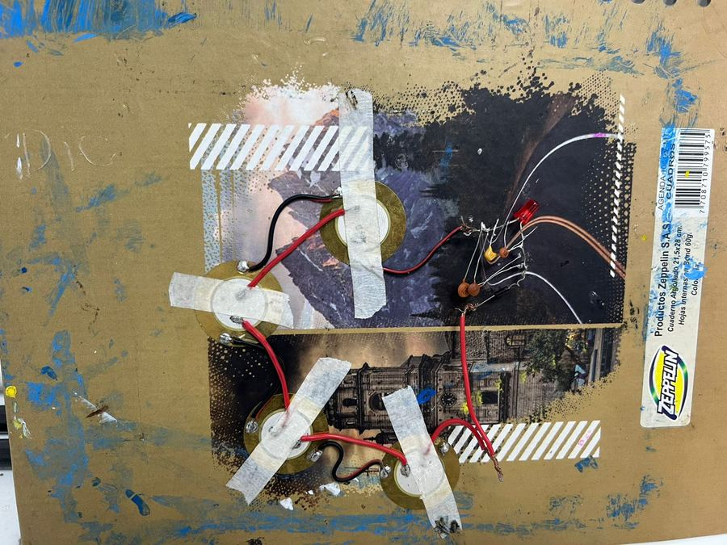
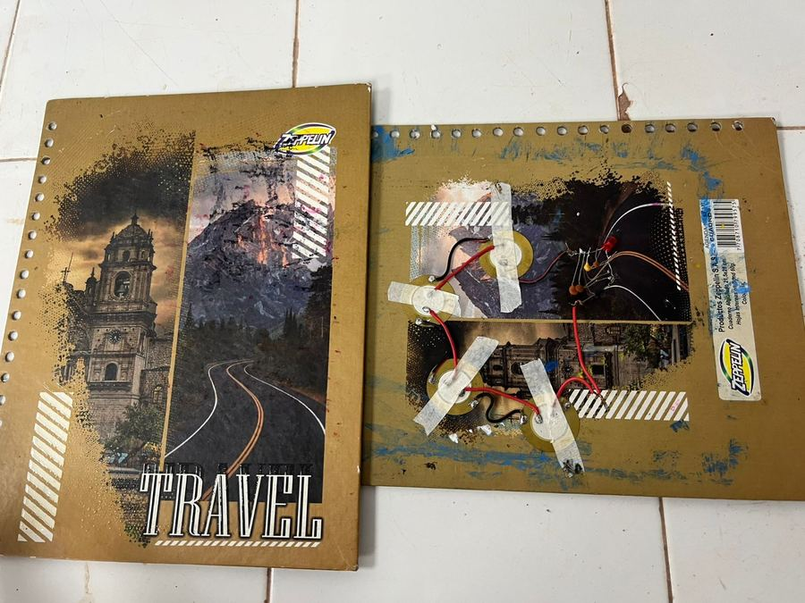
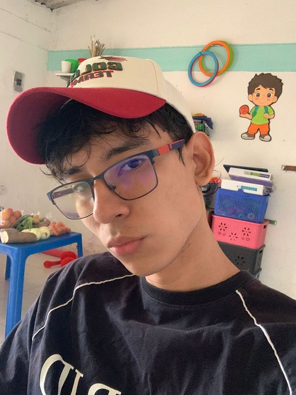
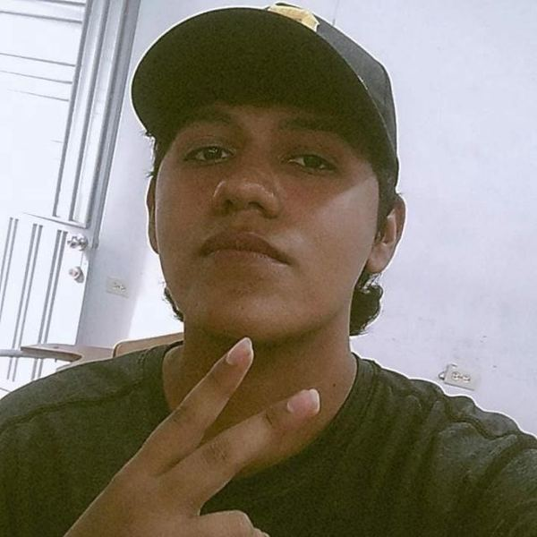

ECOPASO — Prototipo en resina epoxi flexible que convierte la presión del tránsito peatonal en corriente eléctrica mediante módulos unimorph PZT, sin baterías ni partes móviles.
El 80% de la energía mundial proviene de combustibles fósiles (IEA, 2023), mientras 675 millones de personas no tienen suministro eléctrico estable. Al mismo tiempo, el desplazamiento peatonal libera fuerza mecánica constante que nadie aprovecha.
En aeropuertos, universidades y centros comerciales, miles de pisadas ocurren por hora. Cada una genera una pequeña presión — y esa presión, acumulada, representa un potencial energético real y permanente.
ECOPASO conecta esos dos hechos utilizando el efecto piezoeléctrico: ciertos materiales cerámicos (PZT) generan voltaje al deformarse mecánicamente, convirtiendo presión en electricidad sin fuentes externas.
Descubierta por los hermanos Curie en 1880. Materiales con estructura perovskita como el PZT generan un dipolo eléctrico bajo presión mecánica, produciendo voltaje sin fuentes externas ni partes móviles.
Las ciudades crecen y la demanda energética escala. Fuentes integradas en la infraestructura cotidiana — pisos peatonales — pueden complementar redes eléctricas con energía limpia y descentralizada.
Validar experimentalmente que una baldosa con sensores PZT en resina epoxi puede generar energía suficiente para encender un LED mediante pisadas, demostrando el principio físico a escala de laboratorio.
Japón y el Reino Unido ya tienen pisos piezoeléctricos en espacios públicos. ECOPASO es el primer paso hacia esa aplicación en el contexto colombiano, desde la UFPS en Cúcuta.
Metas concretas y verificables que guían el desarrollo de ECOPASO dentro del marco de Procesos Industriales I.
Diseñar una baldosa piezoeléctrica en resina que permita aprovechar la presión del tránsito de peatones para producir energía eléctrica capaz de encender un bombillo LED, validando el principio físico a escala experimental.
Investigar los principios de la piezoelectricidad y su aplicación en la generación de energía a partir de presión mecánica, fundamentando el diseño con literatura científica.
Diseñar la estructura y geometría hexagonal del piso piezoeléctrico para cubrir áreas eficientemente y captar la presión de pisadas de forma homogénea.
Seleccionar e integrar materiales PZT (discos P-81) y componentes electrónicos (capacitores cerámicos, diodo, LED) para construir un prototipo funcional.
Evaluar materiales de relleno (PET, aserrín, caucho triturado) para el encapsulado en resina epoxi, seleccionando el de mayor compatibilidad y flexibilidad.
Verificar el funcionamiento mediante comprobación experimental con carga peatonal real y respuesta luminosa del LED como indicador de generación exitosa.
Cuatro etapas, cero combustible. El principio: presión mecánica → deformación PZT → voltaje → rectificación → luz.
Tamaño ideal para pisadas, bajo costo y compatible con resina epoxi. El proceso de poling alinea los dominios ferroeléctricos maximizando la respuesta (Pereira, 2010).
El desarrollo combinó investigación teórica con experimentación. El circuito no funcionó a la primera — y ese proceso de prueba y error fue parte fundamental del aprendizaje.
El LED no encendió. Hipótesis: polaridad incorrecta de los diodos y orden inadecuado de componentes. El circuito era demasiado complejo — más componentes no implica mejor resultado en sistemas de baja potencia piezoeléctrica.
Al simplificar el circuito — eliminar la resistencia limitadora y reducir sensores — el sistema funcionó. Los capacitores acumulan carga de múltiples pisadas hasta alcanzar el umbral del LED. Menos componentes = mayor efectividad.
El encapsulado demasiado rígido impide que los sensores se deformen. Usar más resina que catalizador reduce la dureza del resultado. El encapsulado estratificado (base → sistema eléctrico → capa protectora) aportó estabilidad térmica y estructural al prototipo.
Diferencia de densidad con la resina: el plástico flotaba hacia la superficie. Distribución irregular que comprometía la presión homogénea sobre los sensores y su protección estructural.
Absorbía demasiada resina epoxi, distribución no uniforme y mayor costo. Baldosa excesivamente rígida y frágil — lo contrario de lo requerido para la deformación del PZT.
Densidad compatible con la resina — se distribuye uniformemente. Elasticidad natural que permite la deformación de los discos PZT al recibir pisadas. Mayor flexibilidad = mayor voltaje generado.
Cobertura continua y eficiente en áreas peatonales. El encapsulado estratificado demostró aportar protección térmica y estabilidad estructural al sistema validado.
El sistema validado demuestra que la conversión de presión mecánica peatonal en electricidad es factible a escala de laboratorio con materiales y componentes de bajo costo.
4 sensores + capacitores cerámicos + 1 diodo fue la configuración ganadora. Eliminar la resistencia limitadora permitió que la energía acumulada llegara sin pérdidas al LED.
La conexión paralela de los módulos PZT mejoró la respuesta eléctrica. La geometría hexagonal favorece cobertura continua en espacios peatonales sin desperdiciar área útil.
El encapsulado estratificado aportó protección térmica y estabilidad estructural. La proporción resina > catalizador es clave para permitir la deformación del sensor bajo pisada.
PET flotó (diferencia de densidad). Aserrín rigidizó (absorción de resina). Caucho distribuye uniformemente y aporta elasticidad compatible con la deformación del sensor — candidato final.
Con caucho + circuito validado encapsulados en molde hexagonal, el prototipo completo es alcanzable. Escalar a 7 módulos y cientos de pisadas diarias multiplicaría la energía generada.
| Componente | Valor |
|---|---|
| Sensores PZT | 4 unimorph 20mm (P-81) |
| Conexión | Paralelo |
| Almacenamiento | Capacitores cerámicos |
| Rectificación | 1 diodo |
| Indicador | LED rojo ✓ |
| Encapsulado | Resina epoxi flexible |
| Relleno propuesto | Caucho triturado |
| Geometría | Hexagonal laminada |
| Módulos / baldosa | 7 PZT en paralelo |
| Fuente de energía | Sin baterías externas |
| Institución | UFPS — Ing. Industrial |
Fotografías y video reales tomados durante el desarrollo de ECOPASO en los laboratorios de la UFPS.
🎥 Video de prueba con un sensor y un LED — demostración del principio piezoeléctrico en tiempo real







Estudiantes de Ingeniería Industrial de la Universidad Francisco de Paula Santander, Cúcuta.


Docente: Silvia Juliana Orozco · Procesos Industriales I · Programa de Ingeniería Industrial · UFPS · 2026
Fuentes académicas y técnicas que fundamentan el diseño, materiales y principio físico de ECOPASO. Formato APA 7.ª edición.
Documentación, bases de datos y referencias externas para profundizar en piezoelectricidad y energías alternativas.
Artículo de Howells (2009) sobre captación de energía mediante materiales piezoeléctricos.
Ir al artículo →Revisión de Sodano & Inman sobre captación de energía por vibración con PZT.
Ver publicación →Trabajo sobre evolución de fuentes energéticas y proyección Agenda 2030 y ODS.
Acceder →Agencia Internacional de Energía: datos sobre dependencia de combustibles fósiles (2023).
Ir a IEA →Universidad Francisco de Paula Santander · Programa de Ingeniería Industrial · Cúcuta.
Visitar UFPS →Evento académico donde se presentó ECOPASO en la feria de innovación institucional.
Más información →Para consultas académicas, colaboraciones o información sobre el proyecto ECOPASO.
🏆 Presentado en Expo Industria 4.0 · UFPS 2026
* Para contacto directo, usa los correos del equipo arriba.